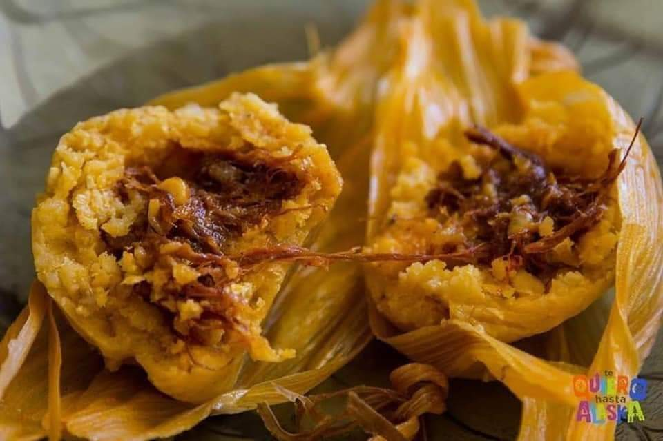
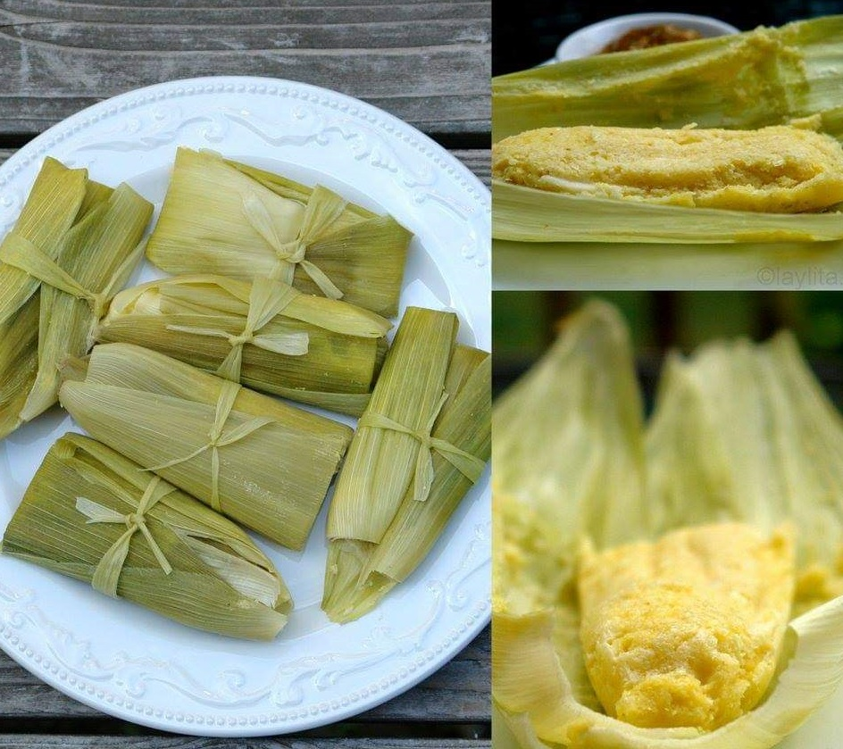
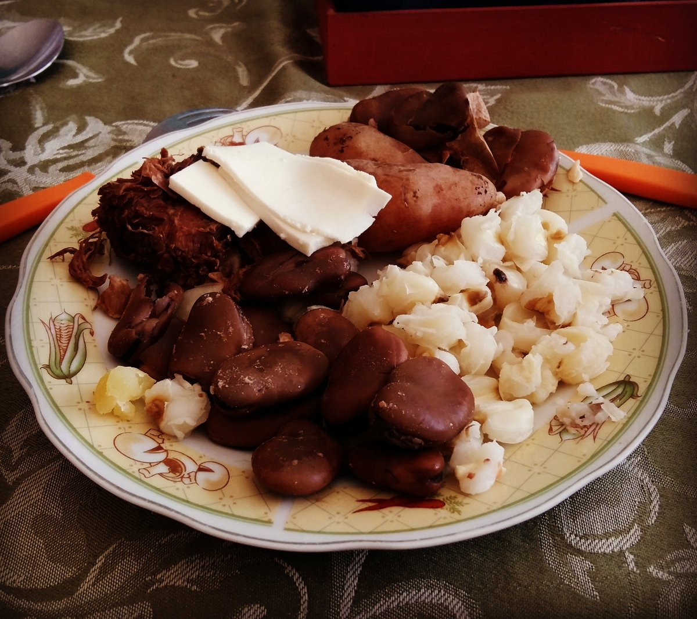
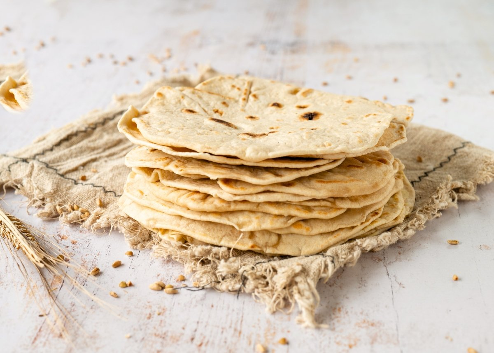
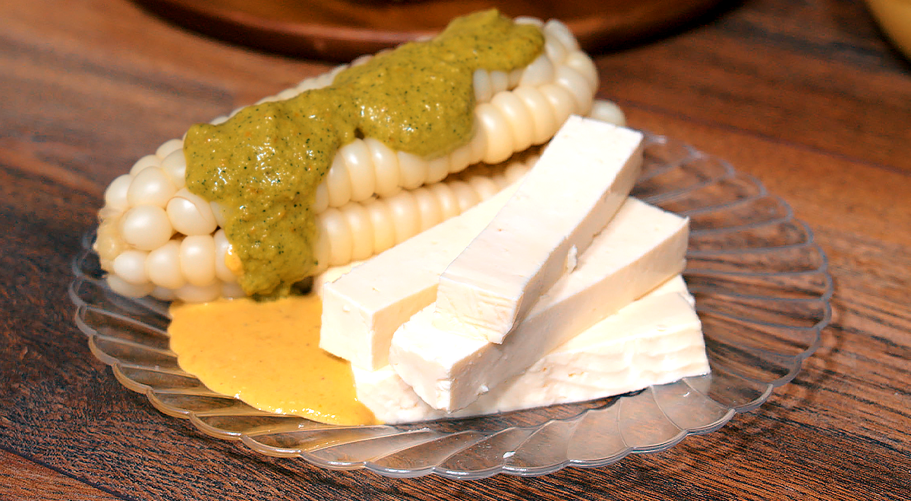

Bienvenidos a nuestra pagina wed de platos tipicos de Tupiza
Nos alegra que estés aquí, explora todo lo que ofrecemos, toda la rica gastronomia chicheña de nuestra region
Sobre Nosotros
Somos unos jovenes estudiantes motivados a preservar la gastronomia de nuetsra region (Tupiza) recopilando sus recetas y preparaciones originales, con el sueño de poder expandir la cultura chicheña a nuevas fronteras y asi ofrecer al mundo una gastronomia unica con platos diferentes a lo comun.
¿Por que eligirnos?
Nuestro compromiso con la autenticidad
Nos esforzamos por ofrecerte recetas autenticas y fieles porque respetamos la cultura chicheña
Nuestra conexion cultural profunda
Tenemos nuestro origen en la ciudad de Tupiza, por lo que tenemos una conexion cultural profunda.
Contacto con cocineros locales
Contamos con el contacto estrecho de personas que conocen las recetas originales transmitidas de generacion a generacion.
Lista de los platos tipicos de tupiza
- 1.Tamal
- 2.Kasa Uchu
- 3.Humintas
- 4.Queso de cabra
- 5.Quiso de palqui
- 6.Tictincha
- 7.Chivo a la cruz
- 8.Asado de cabrito
- 9.Tortillas
- 10.El choclo
Tamal
Ingredientes:
1. Harina o maiz molido (1kg)
2. Charque de res o de llama(500g)
3. Hojas de maiz
4. 1 Cebolla y ajo
5. 2 Cucharas de aji amarillo molido
6. Sal a gusto
7. Agua necesaria
8. Pizca de azucar
9. 1 Cucharada de aceite
Preparacion
°Mezclar el agua con la harina, con un poco de sal y una pizca de azucar hasta formar una masa un poco dura, dejarlo reposar y esperando mientras se prepara lo demas.
°Cortar el charque de res o llama en tiras finas y pequeñas (si es que es necesario) posteriormente cocinar en una olla a presion con agua por unos 30 minutos, despues sacarlo y escurrir su agua hasta que quede una pasta de charque.
°Picar el ajo y la cebolla en trozos pequeños, luego colocar una sarten con aceite al fuego, añadir la cebolla y el ajo, revolverlo hasta caramelizarlos, luego añadir el aji amarillo molido y sazonar con sal a gusto y añadir una pizca de azucar, por ultimo añadir el charque y mezclar todo.
°Tomar dos chalas de choclo y colocarlas en forma de circulo, al centro colocar una porcion de masa de maiz y encima acomodar una porcion de la mezcla de charque y cubrirla con la masa de maiz hasta formar una esfera, luego envolverla con la chala y amarrar con una tira de chala. Cocinar en una olla al vapor por unos 45 minutos a 1 hora.
Kasa uchu

Ingredientes:
1. 4 presas de carne de pollo o cerdo
2. 8 papas
3. Oregano
4. Cebolla
5. Ajo
6. Tomate
7. Sal
8. Perejil
9. Morron
10. Comino
Preparacion:
°Primero se debe limpiar la carne de pollo o cerdo y cortar en trozos pequeños, añadir sal a gusto y dejar esperando.
°Lava y corta la cebolla, tomate y morron en trozos largos y finos, luego en un sarten con aceite caliente, freir la cebolla, el tomate y morron hasta que esten suaves
Agregar la carne a una olla con aceite la carne e ir revolviendo hasta que este dorado
Añadir el comino, oregano y un poco de sal, mezclar bien
A la olla con carne agregar los tomates, cebolla y morron, revuelve todo y deja hervir con el caldo que salio de la carne por una hora o hasta que la carne este tierna a fueo bajo
Para mayor sabor se puede añadir vino blanco y perejil picado, revolver por unos 5 minutos y dejar que termine de cocer
Al momento de servir se puede hacer una zarsa de tomate y cebolla con aceite y sal como pequeño acompañamiento
Humintas
Ingredientes:
1. Maiz fresco
2. Queso
3. Anis
4. Sal
5. Azucar
6. Albahaca
7. Hojas de maiz fresca
Preparacion:
Primero se debe moler el maiz con un poco de agua y albahaca hasta obtener una especie de masa aguanosa
A esta se le debe añadir la sal y el anis junto a un poco de azucar, mezclar todo muy bien
Luego agarrar una parte de la masa y colocarla entre dos hojas de maiz, en forma de un rectangulo y poner un pedazo de queso en el centro de la masa
Envolver y amarrar la mezcla y las hojas con una tira de las hojas del maiz y llevar a una olla con agua y cocinalas a fuego medio durante media hora
Queso de cabra

Ingredientes:
1. Leche de cabra
2. Cuajo
3. Sal
Preparacion:
La leche se de calentar en una olla hasta que hierva, luego retirar la olla y dejar reposar por unos 5 minutos
Agrega el cuajo en polvo y revuelve suavemente por 2 minutos
Deja reposar la mezcla durante 30 a 40 minutos hasta que la leche haya cuajado y se haya formado un coagulo firme
Corta el coagulo en trozos pequeños y colocalos en un colador forrado con un paño limpio
Deja escurrir el liquido durante 30 a 40 minutos hasta que se haya alcanzado la consistencia deseada
Amasa suavemente el queso para eliminar grupo, agrega la sal y revuelve bien
Forma el queso en una bola o un bloque segun la preferncia
Deja madurar el queso durante 2 a 4 horas en un lugar fresco
Luego refrigerar para detener el proceso de maduracion
Quiso de palqui

Ingredientes:
1. 1kg de palqui
2. 2 cucharadas de aceite vegetal
3. 3 dientes de ajo picado
4. 1 cebolla picada
5. 1 cucharadita de sal
6. 1/2 cucharadita de pimienta
7. 1/4 cucharada de oregano
8. 2 tomates picados
9. Carne molida
10. Aceite
Preparacion:
Primero se debe limpiar el palqui y este se debe cortar en trozos pequeños
Agrega la cebolla y ajo en una olla con agua hasta que queden suaves, añade a la olla la carne molida y mezcla hasta que la carne este dorada, despues en una olla aparte agrega el palqui, sal y oregano con un poco de agua por unos 8 minutos y junta todo
Agrega los tomates, pimienta y un poco de aceite a todo el guiso y dejalo hervir por unos 30 minutos o hasta que el palqui este tierno.
Se puede acompañar con arroz blanco o fideos y una procion de queso con una zarsa hecha de tomate con cebolla, tomate, sal y aceite
Tijtincha
Ingredientes:
1. 500 gramos de carne de llama o de vaca como sustituto
2. 2 cucharadas de aceite vegetal
3. 1 cebolla picada
4. 3 dientes de ajo picado
5. 1 cucharadita de sal
6. 1/2 cucharadita de pimienta
7. 1/4 cucharadita de aji amarillo en polvo
8. 2 tomates picados
9. 1 zanahoria picada
10. 2 papas picadas
Preparacion:
Primero se debe lavar y cortar la carne en trozos pequeños y condimentarla con la sal y pimienta
Agrega el aceite en una olla y dejala calentar a fuego medio, ya caliente añade la cebolla y el ajo y cocina hasta que esten suaves
Agrega la carne a las verduras y revuelvelo hasta que este dorada
Agrega los tomates, papas, zanahoria, sal, pimienta y aji amarillo, cocina durante 10 minutos, agrega un poco de agua y dejala cocer a fuego lento por unos 30 a 40 minutos o hasta que la carne este tierna
Se lo puede acompañar con un poco de queso o mote
Chivo a la cruz

Ingredientes:
1. Un chivo entero (5kg aproximadamente)
2. 1 cucharada de sal
3. 2 cucharadas de aceite vegetal
4. 1 cucharada de pimienta
5. 1 cucharada de aji molido
6. 2 dientes de ajo picados
7. 1 cucharada de oregano
8. 1 cucharada de romero
9 1 cucharada de vino blanco
Preparacion:
Primero coloca mucha brasa o carbon sobre una calamina o un contenedor ancho y grande metal y deja que vaya calentando
Limpia el chivo y corta suavemente al chivo por la mitad sin partirlo en dos
Mezcla el aceite, sal, piminta, aji molido, ajo, oregano y romero en un tazon
Unta toda la mezcla en el chivo, sin dejar ni un lugar descubierto y sin condimentar
Coloca el chivo en una curz de hierro y ata con alambre de amarre grueso
Coloca al chivo empalado encima de la brasa por unas 4 horas aproximadamente o hasta que este tierno y dorado
Durante los ultimos minutos de coccion, rocia al chivo con el vino blanco para darle mas sabor
Cuando la carne ya esta lista, dejala reposar por 30 minutos antes de srvirla, se la puede acompañar con arroz blanco, papas al horno o a la parrilla con una ensalada de lo que se antoje y un vino tinto
Asado de cabrito

Ingredientes:
1. Cabrito
2. Sal
3. Ajo
4. Aji
5. Aceite
6. Vinagre
7. Comino
Preparacion:
Se la puede realizar de tres maneras, en un horno, en una sarten con aceite y en una parrila
Primero se debe cortar el cabrito en porciones personales, luego lavarlo muy bien y llevarlo a hervir por unos 10 a 15 minutos, luego sazonar con sal, ajo, aji y vinagre, dejar reposar por unos 15 minutos
Se debe agregar el cabrito al horno, sarten con aceite o parrilla, dependiendo la preparacion que se desea buscar, dejarla cocer por unos 30 a 60 minutos o hasta que la carne este tierna y dorada
Se puede acompañar con una porcion de arroz blanco o con mote como se lo hacia tradicionalmente
Tortillas
Ingredientes:
1. Harina de maiz o trigo
2. Agua
3. Sal
4. Aceite
5. Leche de chivo
Preparacion:
Se mezcla la harina con la sal y leche, luego se amasa hasta obtener una masa muy suave, formar pequeñas bolitas y aplastarlas hasta que tengan la forma de un disco, sin dejarlos muy planos para evitar que se deshagan al freir
En una sarten agregar un poco de aceite y dejarla calentar, antes de agregar las tortillas se debe mezclar las tortillas con un poco de harina, hecho eso se coloca las tortillas a la sarten hasta que las tortillas esten doradas
Se la puede acompañar con miel natural de abeja y leche como acompañamiento
El choclo
Ingredientes:
1. Mazorca de maiz
2. Queso fresco
3. Sal
Preparacion:
El choclo debe ser tierno para tener un buen sabor
En una olla se hace hervir al choclo con mucha agua y sal al gusto, dejar hervir por unos 20 minutos o hasta que el choclo este tierno
Si se desea un nuevo sabor, se puede llevar el choclo a una parrilla para asarlo
Con el choclo cocido solo queda acompañarlo con queso
SERVICIOS

Mercado Negro
El Mercado Negro de Tupiza se ubica entre la avenida regimiento chichas y la calle Junín, cuenta con una sección de comedor muy valorada tanto por habitantes locales como por visitantes. Aquí, los cocineros preparan una variedad de platos tradicionales de la región, haciendo énfasis en los sabores y técnicas ancestrales que reflejan la rica gastronomía de Tupiza. Entre los platos típicos que se pueden encontrar están el ají de palqui echos del palqui producido de la región , tamal con ingredientes autóctonos de la región, humintas, etc. Estos espacios no solo se centran en la comida tradicional, sino que también integran la producción local, utilizando ingredientes frescos y típicos de la región como maíz, papas, quinua, y carnes de cordero y llama.

Mercado Gil Duran
El Mercado Antonio Gil Duran esta ubicado cerca de la avenida principal, exactamente en la avenida regimiento chichas y la calle florida. Este mercado es un lugar de encuentro para la compra de productos frescos y locales, atrayendo tanto a habitantes como a turistas. En el Mercado Gil Duran, los vendedores ofrecen una gran variedad de frutas, verduras, carnes y especias provenientes de las áreas rurales circundantes, con un enfoque en productos autóctonos como el maíz, la quinua, y la carne de llama. Además de ser un punto de abastecimiento, el Mercado Gil Duran representa un aspecto cultural importante en Tupiza. Aquí, se pueden encontrar ingredientes clave para la preparación de platos típicos de la región, como el ají de palqui, la k’hasauchu y otros, que conectan la tradición culinaria con la producción agrícola local. La cercanía del mercado a oficinas de turismo, como las de Tupiza Tours, hace que sea un lugar estratégico tanto para los residentes como para los viajeros que buscan probar la gastronomía local o abastecerse para sus excursiones en la región.

Mercado Campesino
El Mercado Campesino es uno de los mercados más importantes de Tupiza para la venta de productos frescos y locales. Está ubicado en la zona céntrica de Tupiza. Este mercado es frecuentado por campesinos y agricultores de comunidades cercanas que venden directamente sus productos, como frutas, verduras, carnes, granos y especias. La relación entre el Mercado Campesino y los platos típicos de Tupiza es bastante significativa, ya que muchos de los ingredientes que se utilizan en las recetas tradicionales de la región se encuentran en este mercado. En el mercado campesino puedes conseguir productos frescos y autóctonos de la zona, como la quinua, el maíz, la papa, y carnes como el cordero y la llama, también platos de comida como el tamal, k’hasauchu, ají de palqui, etc. Este mercado no solo es un lugar de abastecimiento, sino también un espacio cultural donde los habitantes y visitantes pueden experimentar la riqueza gastronómica de Tupiza, conectando la agricultura local con la tradición culinaria del lugar.